| 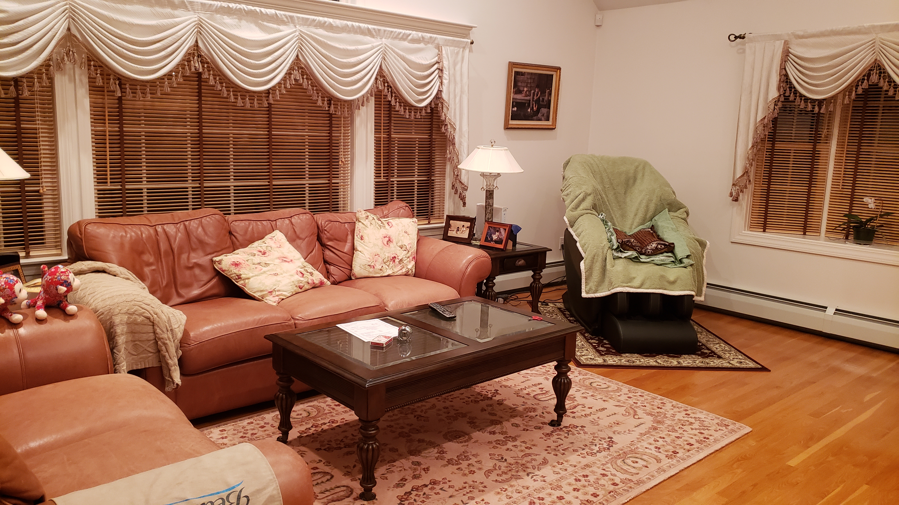 | 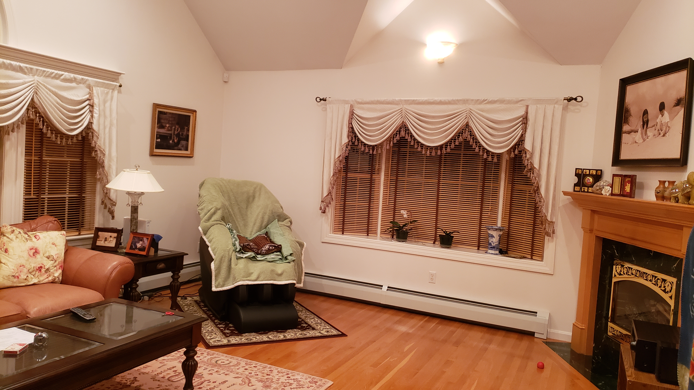 |

|

|

|

|
Mosaicing! In the first part of this project, we're trying to stitch together two photos that have manually defined correspondence points. This is pretty cool, it's like a very simplistic version of panoramic photography, (although I prefer just pressing the button on my phone, rather than computing the homography matrix personally). In the second part, we'll see how we can avoid manually marking correspondence points which is bound to introduce some human error. Instead we'll use feature detection to automatically generate these image mosaics.
In this part, we're just going to take some pictures. Not too much to say, so I'll just show you the source images that we're going to be stitching together later. It's worth noting that I had to carefully follow the guidelines in the spec, namely I overlapped about 40-50% of the entire snapshot to give myself some leeway with the correspondence points.
| 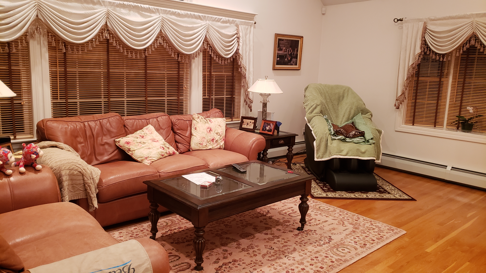 | 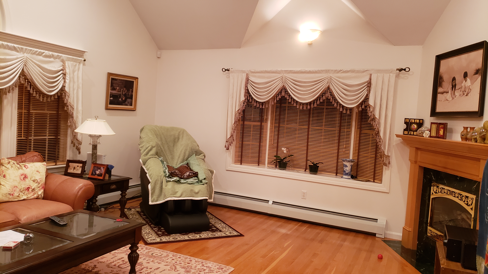 |
|
|
|
|
|
|
The first picture is a picture of a room from my home in Massachusetts. Please don't judge the messiness :'( but do note how the curtains, chair and table overlap in the two snapshots. Also notice the aliasing in the blinds. It's not really important but I think it's pretty cool. The second is of a road near my home, and the third is of my backyard.
Like I mentioned, we're using some good old-fashioned ginput to get our correspondences. For the room, I defined 12 correspondence points along
the ceiling, curtains, chair, carpet, and table. I don't have the correspondence points anymore unfortunately, but we json dump the correspondences
so we can just load them next time.
For someone like me who has forgotten a good deal of Math54, the homography was actually the hardest part of this project. I had to consult numerous sources
to help me figure out how to generate the homography (and figure out what a homography was in the first place). I won't get into the mathematical proof of
homography computation. There are plenty of people far smarter and far better at math who can provide a much better explanation, but the general process I followed was:
for each point correspondence that I defined, I was able to create two matrix rows in my system of linear equations as described
here. For the room pictures, I mentioned that I took 12 correspondence points
which actually means I'll wind up with 3x the number of linear equations that I really need, thus we can use the least squares method to compute the solution to our linear
system, which thus allows us to complete our homography matrix. I've included the homography I computed for the room pictures below for reference. The one above is the one I
generated with least squares, and the one below, cv2.findHomography generated. Small differences are to be expected.
$$\begin{bmatrix} 5.33893200e^{-1} & 1.14942931e^{-1} & 5.70478238e^{2}\\ -1.02207360e^{-1} & 9.11064695e^{-1} & -7.59111412e^1\\ -3.40852585e^{-4} & 1.06278819e^{-4} & 1.00000000\end{bmatrix}$$
$$\begin{bmatrix} 5.35453952e^{-1} & 1.16700640e^{-1} & 5.69996204e^{2}\\ -1.02260985e^{-1} & 9.12701887e^{-1} & -7.61888916e^1\\ -3.40573532e^{-4} & 1.08284606e^{-4} & 1.00000000\end{bmatrix}$$
At the end of the day, a homography is a subset of a linear transformation. The thing is, we can't just slap a transformation on our src points to get our target
points and call it a day. Instead we're going to invert our transformation. In other words, we know our homography \(H\) will linearly transform between our source points and our target points
so that means \(H^{-1}\) should logically transform between target points and source points. So let's take a blank canvas that will be large enough for our source and target images stitched
together, and for each pixel in our canvas, we'll transform by \(H^{-1}\) to get the source input. Then we can just texture map this coordinate onto our canvas (essentially we're just
doing a manual texture map here anyways). This is a bit of an oversimplification of the process, which was really helpfully described here,
but this is how we can employ cv2.remap to texture map our canvas, which in effect linearly transforms our source image to our target image where the transformation operator
is the homography matrix \(H\).
Here's what the image looks like transformed by the inverse homography (without the target image stitched in as well).
| 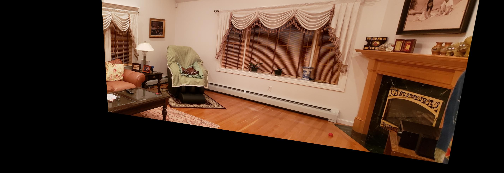 |
We're going to embark on a brief sidequest to see how image rectification works. This picture was taken by Berkeley Lecturer (and alumnus), the wonderful Michael Ball. I ~really~ miss Berkeley right now, so seeing this picture was a nice wave of nostalgia for campus :)
| 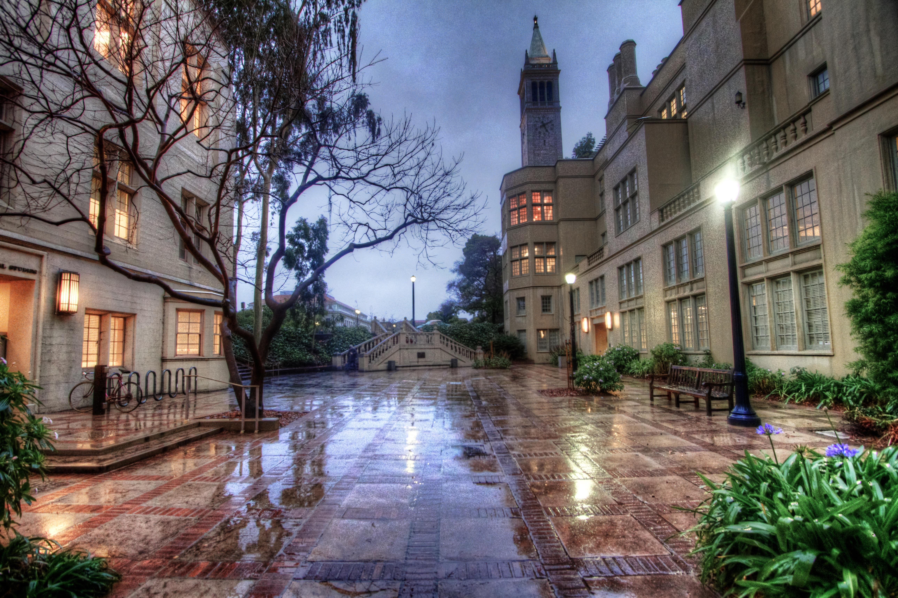 |
I really like the way the tiles look here, with the light drizzle reflecting the dim lighting, so let's say I REALLY wanted to look at the tiles head on and I didn't care about anything else in this scene. Again I'll need my correspondences, so I chose one of the square tiles in the front left. So I don't know what the dimensions of this square tile would be looking at them head on, and unfortunately quarantined at home, I can't go out and check, so I'll just guess, based on the coordinates of the points I selected, and synthesize a square at the same position of almost identical dimensions. If I apply the linear transformation again, like last time (after computing the homography), I'll see something like this!
| 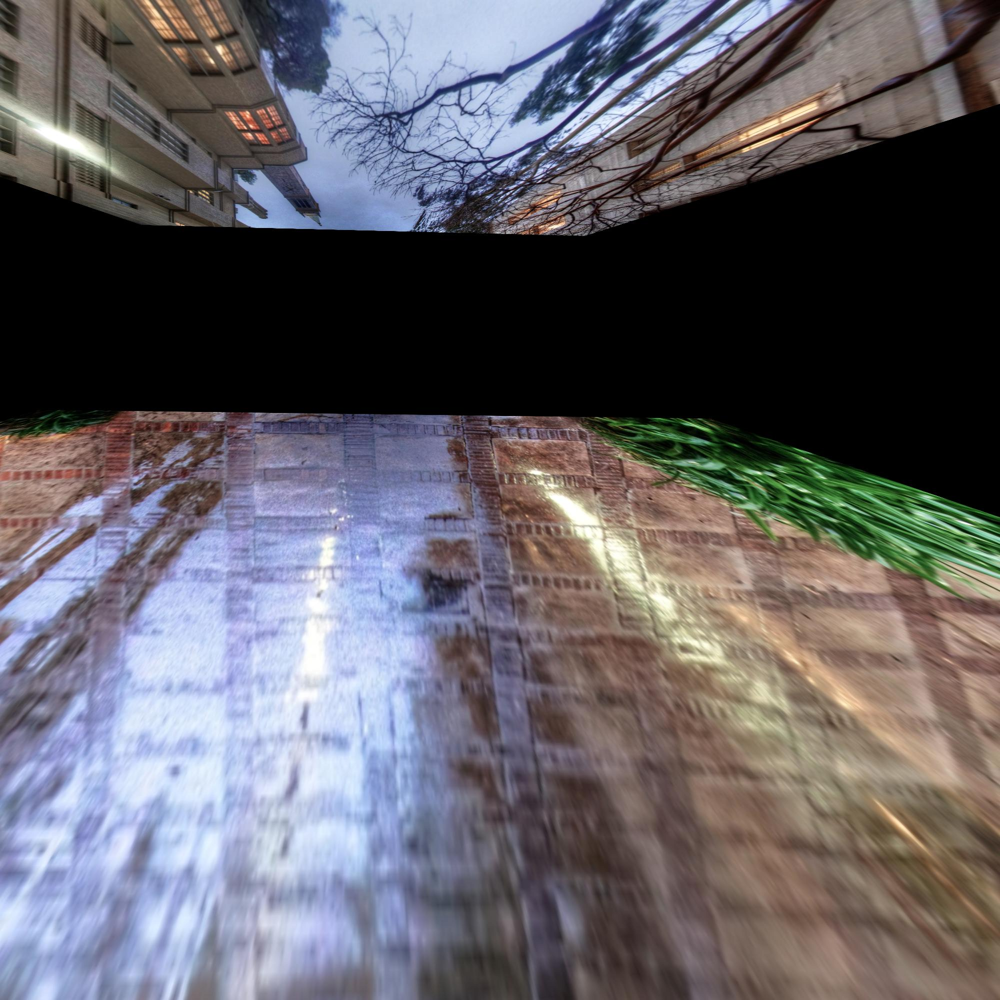 |
Alright yea I admit it looks a little weird. But you'll notice that for the tiles, we're now looking at them from an orthographic view rather than a perspective view. It isn't perfect, because neither my clicking ability, nor my manual correspondence creation is perfect unfortunately, but it definitely gets the idea across. I'll manually crop it to just the tiles so you can focus on the effect.
| 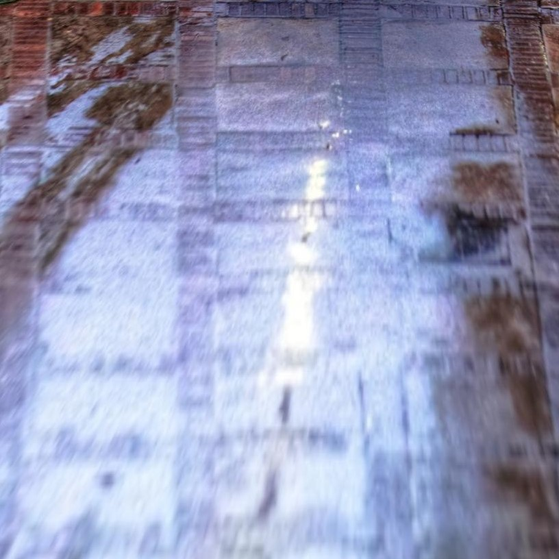 |
I'll be the first to admit, I prefer the full version to just looking at the tiles though.
We can see another example of image rectification here. I took this picture of a sculpture that I really liked at the Corning Museum of Glass. Here's the perspective at which I took the picture.
| 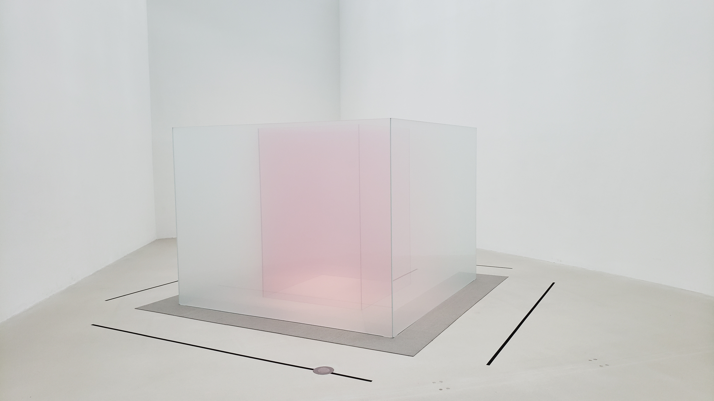 |
And here's what happens if I wanted to have the left face parallel to me. You'll notice that the warp isn't perfect. There's no way I can rotate the image completely, but we
can rectify the image so that the left face looks like it has no projection applied at all. If you look carefully, you'll notice the left face is a perfect rectangle, rather than
an arbitrary quadrilateral like in the original image. This time, I followed a tip from Piazza and used the coordinate tracking in matplotlib to guess the inverse
warped rectangle corners.
| 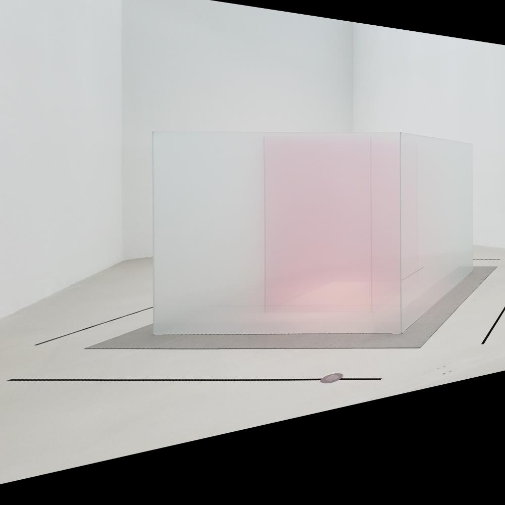 |
Ok time for the Big Kahuna. Mosaics or I guess a poor man's panorama is what we were after in the first place. I already transformed the room image in place, so now all I need to do is stitch in the target image to make it a real stitched photo. There are two options here. I could just take the combined photo, and overlay the target image, and if my transformation is decent, it won't be absolutely abysmal! Let's take a look.
| 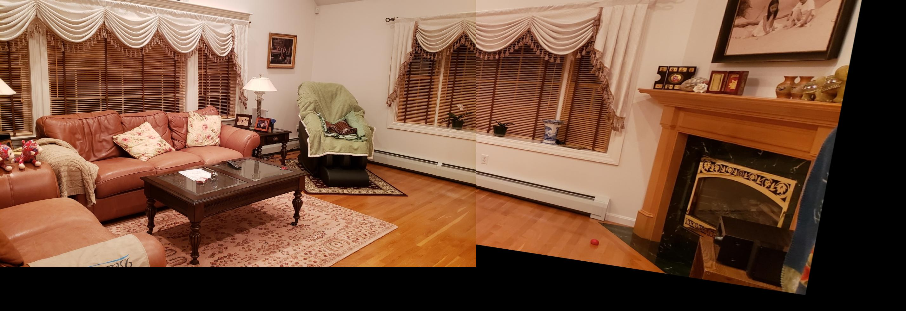 |
Not abysmal isn't exactly aiming for the stars or anything, so we can actually make this better. Another option is basically whenever any of the pixel values would clash in our canvas we can just average the clashing pixels. Now I'm sure there are much better ways of doing this, but the following algorithm works and is easy so..... basically all we have to do is after transforming our source image onto the canvas, we can just iterate through all the pixels of the target image. If the corresponding pixel in the canvas is black, nothing is there, so we can just place our target image pixel. Otherwise, take the color currently in the canvas, average it with the target pixel, and place this averaged pixel in the canvas instead.
| 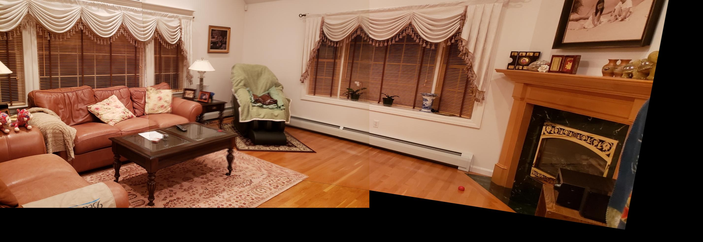 |
We don't really need to average here, so we can try different linear interpolation factors. Personally, since the image on the left is a bit darker, I opted to use more of the image on the right to kinda dull the super drastic lighting rift, so I used a lerp factor of 0.8, which I think looks better.
| 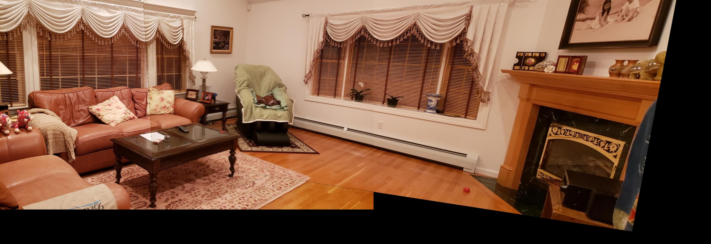 |
Here's the source images and mosaic from the road near my house:
|
|
|
|
| 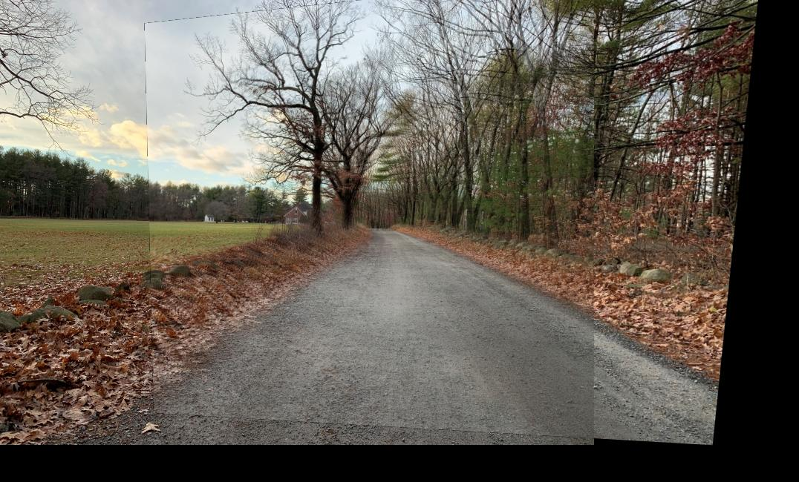 |
And here's the source images and mosaic from my backyard:
|
|
|
|
| 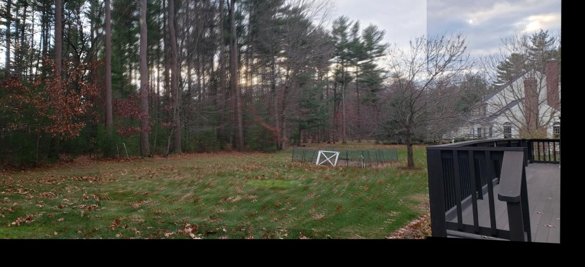 |
All in all this part was very cool. I think the most interesting thing I learned by far was the homography calculation. The idea that you can arbitrarily stitch these two images provided they follow some simple rules is amazing. It really got me thinking about projection transformations in 3D. Learning how to generate this homography matrix that would then allow me to create these small mini mosaics was pretty insightful to the way projection really works.
I've probably manually clicked more points in this class than I ever have before, and honestly speaking it isn't the most engaging activity, so this next section focuses on how we can use computer vision to identify correspondences automatically.
The course staff was nice enough to give us a working implementation of the Harris Interest Point Detector, so that will be our starting point for feature extraction. For each of the interest points our corner detector notes, we'll try to get some context about why that point is interesting. This is the theory behind the MOPS descriptor (multi-scale orientated patch), although in this project, we kinda eschew orientation, and multi-scale. The theory is that since we're trying to match features, not points, we should have a general idea about what features each interest point is marking, so we take a 40x40 pixel patch around our interest point. Now, we could just take a direct 40x40 pixel patch, but we don't want really drastic pixel deltas since this can mess with feature matching, so instead we'll take a 40x40 pixel patch around our interest point in a version of our input that has been first convolved with a Gaussian Kernel. Finally 40x40 patches are large, finicky, and slow, so we'll instead take every 5th pixel to get a 5x5 patch. To recap, at this point, for each interest point in each input image, we should have a corresponding 5x5 pixel patch, represented as an array of 25 pixel intensity measurements. Below you can see corners of the room in my house.
| 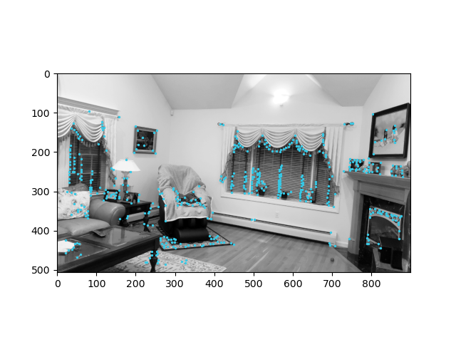 | 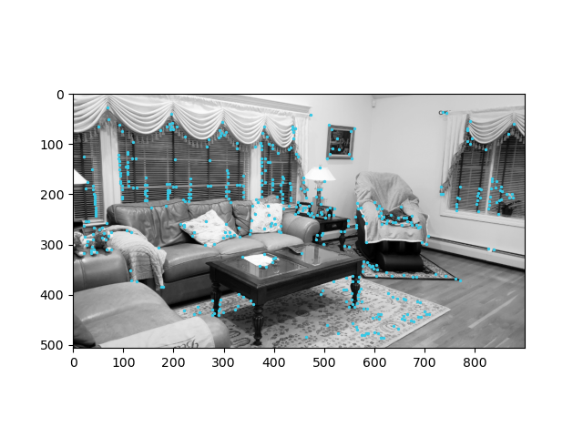 |
So we won't actually just directly use the total set of interest points that the Harris point detector gives us. For a given high resolution, we might end up with a huge number of interest points (> 3000) and to brute force analyze 3000 x 3000 points each time would be super annoying. Instead we'll use the adaptive non-maximal suppression algorithm. In essence, for each interest point, we can compute the maximal distance from the point before we find a pixel with greater "corner value", and this maximal distance is called the corner's suppression radius. The ANMS algorithm simply generates the suppression radius for each corner, then only uses the 500 corners with maximal suppression radius. Below you can see ANMS corners of the room in my house.
| 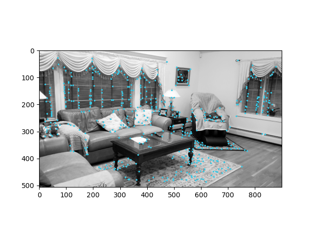 |
Now we have features which is nice, but just having features isn't enough; we want correspondences, not raw features. The question then becomes how do we know if two features (patches) are similar? Well if you have two arrays of 25 values, the natural metric for similarity is just comparing component wise similarity, and the metric that captures a quantitative measure of the entire arrays' similarity is SSD. The natural thing would just be to pick the 1-NN patch (patch with lowest SSD), but in the source paper, the authors delineate some problems that this causes down the line. Therefore, for each patch in image A, we say the 1-NN patch in image B is an acceptable match if and only if \(SSD(1-NN) / SSD(2-NN) < 0.1\). We'll repeat this procedure for every interest patch in image A, so that we will complete the matching algorithm with a set of matched patches, and thus a set of matched corners.
At this point, we could theoretically just plug in all of the matched corners into the homography calculation function we defined in Part1, but the problem is, the truth is that some of these matches are outliers. The RANSAC algorithm tries to work around this issue by essentially brute force searching through all subsets of 4 matches to find the best set of 4 matches, where the best set is indicated by the set that computes the most inliers. More precisely, for each set of 4 matches, we'll create the homography warping the source points to the target points, then for all matched interest points, we'll warp the source point using our homography. A warp is considered an inlier if the projected target point is less than 2 pixels from the actual target point. By this logic, the more inliers a subset of 4 matches has, the better that set of matches is. We'll use the largest resultant set of inliers that can be generated by one subset of 4 matches, and by the least squares method, we'll determine the optimal homography. At this point, with a homography, source interest points and target interest points, we can generate the actual mosaic in exactly the same manner as we did in part 1.
Let's see what autostitching looks like. For the three mosaics below, the mosaic on the left is hand-stitched, and the mosaic on the right is autostitched.
| 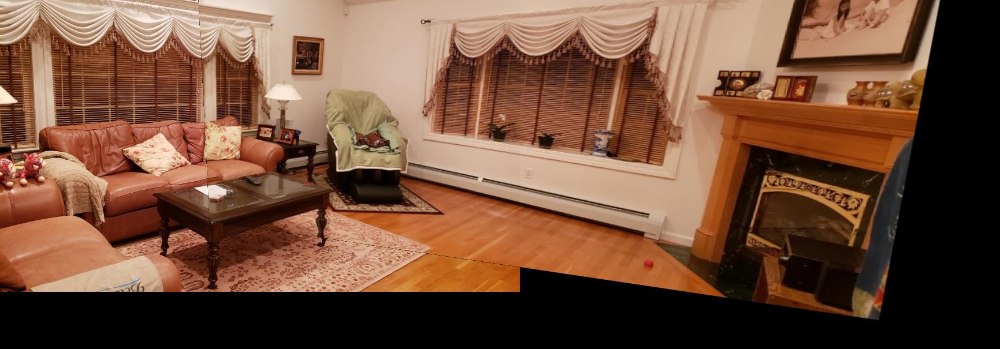 | |
| 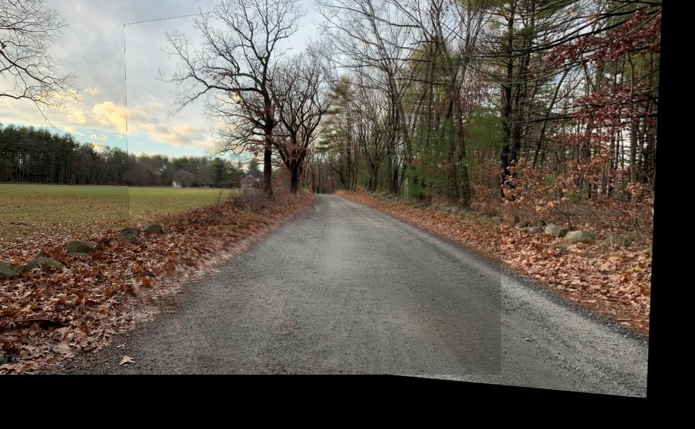 | |
| 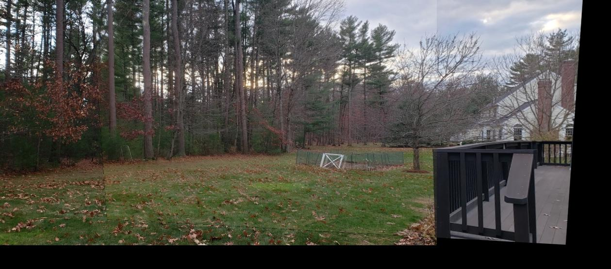 |
The coolest thing I learned from this part was definitely the idea of feature matching. Earlier in the semester we kind of talked about how CNNs would learn features as well in convolutional layers but that can be very un-intuitive to think about. The way the MOPS descriptor works is very clear to me, and the pathway it takes, from analyzing corners, then patches is quite clear if you think about it step by step. It was also very interesting to think about how at the end of the day, the base calculations for the homography matrix are exactly the same. Everything culminating in the RANSAC algorithm is solely for the purpose of finding the best inliers to get our homography. It didn't really occur to me how interrelated these algorithms were until I realized at the end that everything that I implemented in this part was just so I could get a better homography matrix.